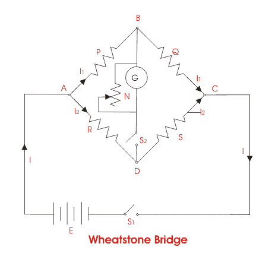
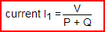
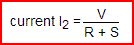
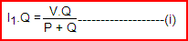
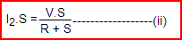
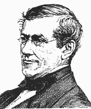
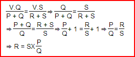

Wheatstone Bridge
For measuring accurately any electrical resistance Wheatstone bridge is widely used. There are two known resistors, one variable resistor and one unknown resistor connected in bridge form as shown below. By adjusting the variable resistor the electric current through the Galvanometer is made zero. When the electric current through the galvanometer becomes zero, the ratio of two known resistors is exactly equal to the ratio of adjusted value of variable resistance and the value of unknown resistance. In this way the value of unknown electrical resistance can easily be measured by using a Wheatstone Bridge.

Wheatstone Bridge Theory
The general arrangement of Wheatstone bridge circuit is shown in the figure below. It is a four arms bridge circuit where arm AB, BC, CD and AD are consisting of electrical resistances P, Q, S and R respectively. Among these resistances P and Q are known fixed electrical resistances and these two arms are referred as ratio arms. An accurate and sensitive Galvanometer is connected between the terminals B and D through a switch S2. The voltage source of this Wheatstone bridge is connected to the terminals A and C via a switch S1 as shown. A variable resistor S is connected between point C and D. The potential at point D can be varied by adjusting the value of variable resistor. Suppose electric current I1 and electric current I2 are flowing through the paths ABC and ADC respectively. If we vary the electrical resistance value of arm CD the value of electric current I2 will also be varied as the voltage across A and C is fixed. If we continue to adjust the variable resistance one situation may comes when voltage drop across the resistor S that is I2.S is becomes exactly equal to voltage drop across resistor Q that is I1.Q. Thus the potential at point B becomes equal to the potential at point D hence potential difference between these two points is zero hence electric current through galvanometer is nil. Then the deflection in the galvanometer is nil when the switch S2 is closed.
Now, from Wheatstone bridge circuit

and

Now potential of point B in respect of point C is nothing but the voltage drop across the resistor Q and this is

Again potential of point D in respect of point C is nothing but the voltage drop across the resistor S and this is


Equating, equations (i) and (ii) we get,

Here in the above equation, the value of S and P ⁄ Q are known, so value of R can easily be determined.
The electrical resistances P and Q of the Wheatstone bridge are made of definite ratio such as 1:1; 10:1 or 100:1 known as ratio arms and S the rheostat arm is made continuously variable from 1 to 1,000 Ω or from 1 to 10,000 Ω
The above explanation is most basic Wheatstone bridge theory.
 by
by